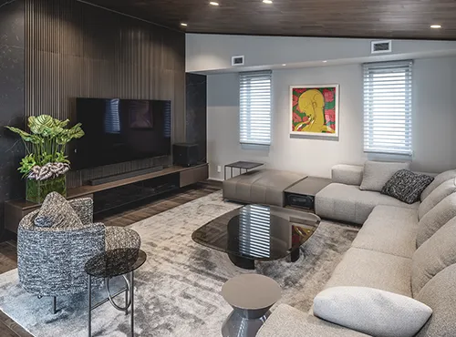
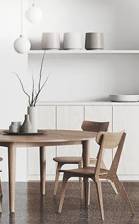
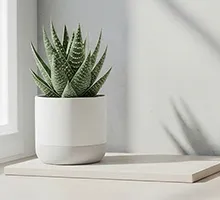
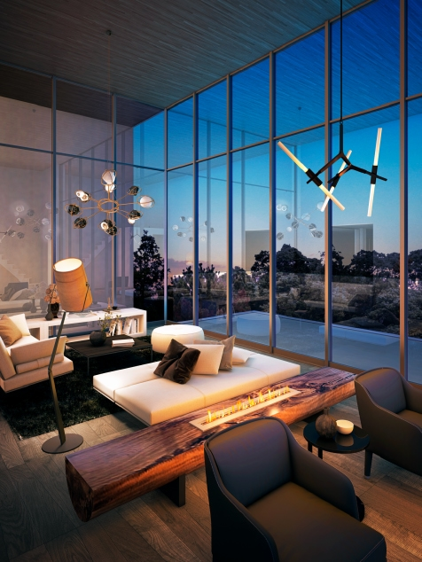
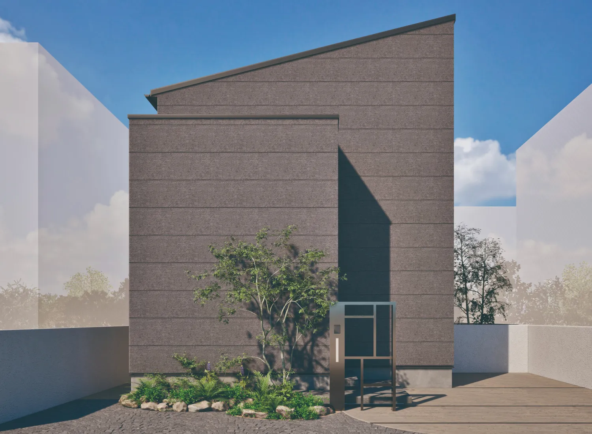
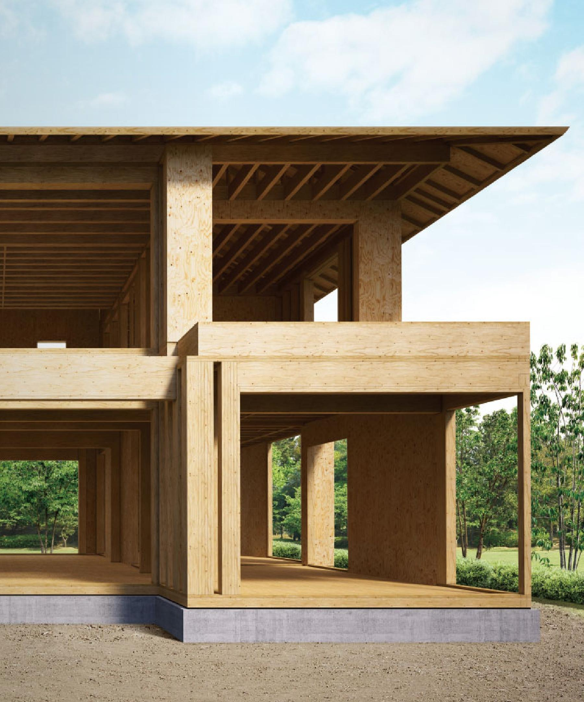
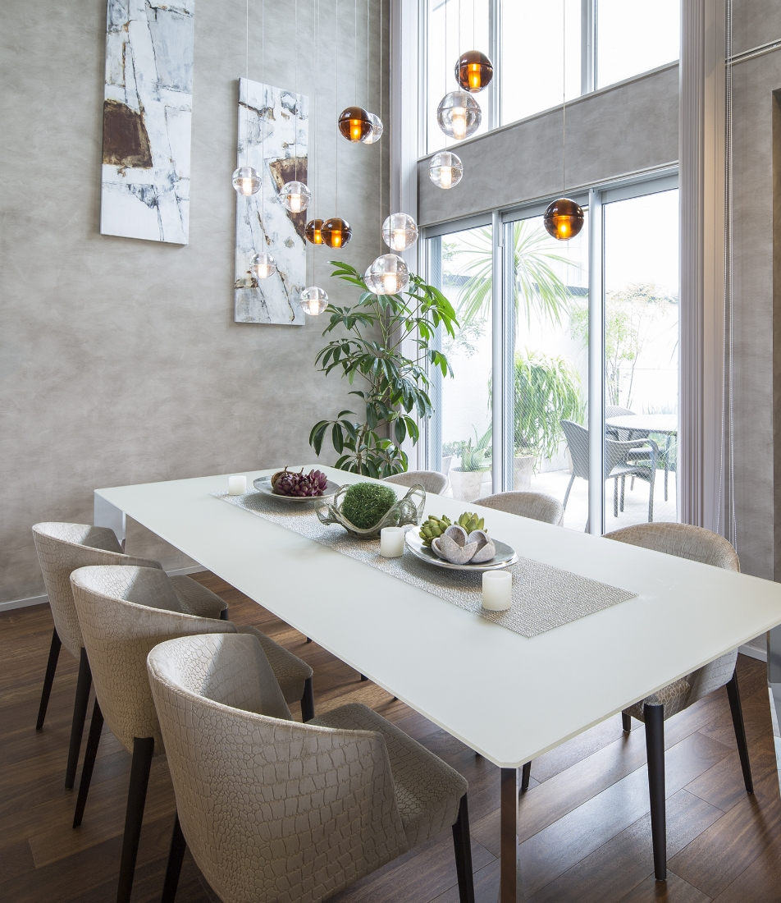
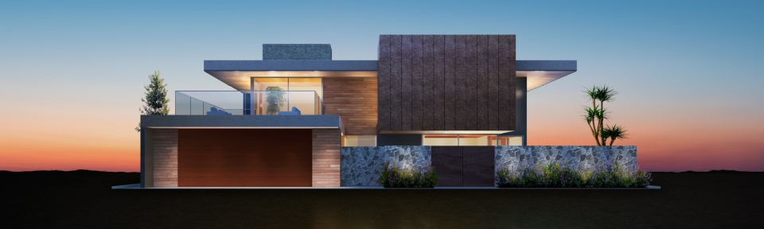
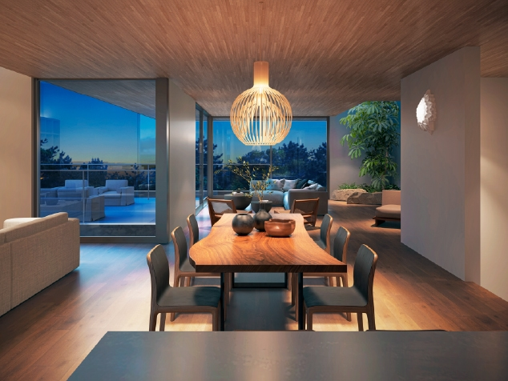

① 会社・基本データ

| 項目 | 内容 |
|---|---|
| 会社名 | 三菱地所ホーム株式会社 |
| 設立 | 1984年7月2日（開業: 1984年10月1日） |
| 本社 | 東京都新宿区新宿六丁目27番30号 新宿イーストサイドスクエア7階 |
| 資本金 | 1億円（三菱地所株式会社 100%出資） |
| 売上高 | 313億円（2025年3月末実績） |
| 従業員数 | 489名（2026年1月時点） |
| 年間受注棟数 | 約500〜600棟（2019年度実績: 573棟） |
| 対応エリア | 首都圏（東京・神奈川・千葉・埼玉・茨城）＋関西圏（大阪・京都・兵庫・奈良）※一部地域を除く |
| 親会社 | 三菱地所株式会社（東証プライム上場） |
三菱地所グループの位置づけ
三菱地所ホームは、日本を代表する総合不動産デベロッパー「三菱地所」の住宅部門。丸の内を中心としたオフィスビル、商業施設、マンション（ザ・パークハウス）まで手がける三菱地所グループの一員として、グループのブランド力・技術力・信頼性を背景に注文住宅を展開している。
少量受注の特徴
年間受注棟数は約500〜600棟と、大手ハウスメーカー（積水ハウス約1万棟、一条工務店約1.6万棟）と比較すると圧倒的に少ない。その分「1棟1棟に丁寧に向き合う」姿勢が特徴で、設計の自由度と施主との打合せの密度が高い。1棟あたりの平均単価は6,000万円超（2021年度上期実績）と高額帯に位置する。
一言で言うと？
三菱地所グループの信頼を背景に、全館空調「エアロテック」を全棟標準搭載する、少量受注・高品質路線のハウスメーカー。首都圏・関西圏限定で、1棟ずつ丁寧に設計・施工する「質」重視の家づくりが最大の特徴。
② 商品ラインナップと坪単価
注文住宅（フルオーダー）




坪単価の目安（全体）
| 商品 | 坪単価目安 | 建築総額目安（35坪） |
|---|---|---|
| ORDER GRAN | 130〜200万円 | 5,500〜8,000万円 |
| ONE ORDER | 90〜130万円 | 3,800〜5,500万円 |
| ROBRA | 100〜150万円 | 4,000〜6,000万円 |
| SMART ORDER Fit | 60〜70万円 | 1,490〜2,500万円 |
| （全体平均） | 約103〜123万円 | 約4,000〜5,000万円 |
FMT構法（ROBRA）の特徴
| 項目 | 詳細 |
|---|---|
| 正式名称 | Flat Mass Timber構法 |
| 構造方式 | 国産ヒノキ集成材の厚板パネル＋鉄骨梁のハイブリッド |
| 最大開口 | 約7m（コーナー部で合計12m） |
| 構造壁量 | 2×4工法の1/6〜1/7 |
| コスト | RC造の約2割ダウン |
| 用途 | 住宅だけでなくクリニック・店舗・商業ビルにも対応 |
SMART ORDER Fitの登場で、三菱地所ホームの「高すぎて手が出ない」イメージは変わりつつある。ただし主力のONE ORDERは坪単価90万円〜で、大手の中でも高価格帯に位置する。
③ 構造・耐震

ツーバイネクスト構法（2×NEXT構法）
三菱地所ホームの主力構法。従来のツーバイフォー（2×4）工法を独自技術で大幅に進化させたもの。
| 項目 | 詳細 |
|---|---|
| 工法 | 枠組壁工法（2×6 = ツーバイシックス）をベースに独自進化 |
| 壁厚 | 140mm（2×6規格: 38mm×140mm角材） |
| 耐震等級 | 全棟: 耐震等級3（最高等級） |
| 国産材比率 | 82%（国内2×4住宅メーカーとしてトップレベル / 2024年度試算） |
独自技術3本柱
1. ハイプロテクトウォール（高耐力壁）
| 項目 | 詳細 |
|---|---|
| 壁倍率 | 6〜10倍（一般的な2×4の約1.5倍） |
| 外壁に標準採用 | 全棟に搭載 |
| 材料 | 国産材の構造用合板一級を採用 |
| 効果 | 一般的な2×6外壁の耐力を50%UP |
2. キーラムメガビーム（高強度床根太）
| 項目 | 詳細 |
|---|---|
| 最大スパン | 6.37m（一般的な2×4は4.55m以下） |
| 効果 | 従来より2m広い大空間を間仕切り壁なしで実現 |
3. エムビーウォール / 3D ティンバーフレーム（大開口）
| 項目 | 詳細 |
|---|---|
| エムビーウォール | ラーメン構造で最大5.7mの大開口。壁倍率8倍相当 |
| 3D ティンバーフレーム | コーナー部に最大8mの連続両面大開口を実現する次世代木質ラーメンフレーム |
制振システム「エムレックス」
地震動エネルギーを熱エネルギーに変換・吸収し、建物の揺れを抑制。繰り返す余震による構造劣化を大幅に軽減する。
免震システム「ピアニシモ」
| 構成装置 | 役割 |
|---|---|
| 十字型転がり支承 | 家を支え、伝わる地震力を低減 |
| 粘性減衰ダンパー | 地震エネルギーを吸収 |
| 高減衰積層ゴム | 地震で動いた家を元の位置に復帰 |
| 効果 | 地震エネルギーを約1/5、揺れを約1/10に減衰 |
過去の地震での実績
阪神・淡路大震災（1995年）では、2×4（ツーバイフォー）工法の住宅について、社団法人日本ツーバイフォー建築協会の調査で損傷軽微の割合が高かったと報告されている。ただし三菱地所ホーム固有のデータ（全壊・半壊率など）は公式一次情報で未確認のため、本項は業界全体の2×4工法の耐震実績として参照されたい。
④ 断熱性能
UA値（外皮平均熱貫流率）
| 項目 | 数値 |
|---|---|
| UA値（標準仕様） | 0.39 W/m²K |
| 断熱等性能等級 | 等級6 |
| （参考）国の省エネ基準（6地域） | 0.87 W/m²K（等級4） |
| （参考）ZEH基準（6地域） | 0.60 W/m²K |
ツーバイネクスト構法の2×6外壁（140mm）をベースに、高性能断熱材を充填。北海道レベルを上回る断熱性を実現している。
他社との断熱性能比較
| ハウスメーカー | 三菱地所 | UA値 | 断熱等級 |
|---|---|---|---|
| 一条工務店（i-smart） | — | 0.25 | 等級7 |
| スウェーデンハウス | — | 0.38 | 等級6 |
| 三菱地所ホーム | ◎ | 0.39 | 等級6 |
| 三井ホーム | — | 0.43 | 等級5〜6 |
| 住友林業 | — | 0.46 | 等級5 |
| 積水ハウス（木造） | — | 0.46〜0.60 | 等級5 |
| ヘーベル（鉄骨） | — | 0.55〜0.60 | 等級5 |
UA値0.39は業界トップクラス。一条工務店・スウェーデンハウスに次ぐ水準で、大手ハウスメーカーの中では非常に優秀。ここにエアロテック全館空調が加わることで、家全体の温熱環境が極めて快適になる。
⑤ 気密性能
C値（相当隙間面積）
| 項目 | 数値 |
|---|---|
| C値 | 1.2 cm²/m²レベル |
| 次世代省エネ基準 | 5.0 cm²/m² |
| 高気密住宅の目安 | 1.0 cm²/m²以下 |
気密測定について
- 三菱地所ホームは全棟で気密測定を標準実施していない（希望者には対応）
- C値1.2レベルは2×4/2×6工法としては標準的な水準
- ただしエアロテック（第一種換気）との組合せで、C値だけでは測れない室内環境の快適さを実現
他社との気密性能比較
| ハウスメーカー | C値（公表データ） | 全棟測定 |
|---|---|---|
| 一条工務店 | 0.59（全棟平均） | 全棟実施 |
| 三菱地所ホーム | 1.2レベル | 希望者のみ |
| 住友林業 | 非公表 | 希望者のみ |
| 積水ハウス | 非公表 | 実施せず |
| 三井ホーム | 非公表 | 希望者のみ |
| ヘーベルハウス | 非公表 | 実施せず |
C値は一条工務店に比べると劣るが、多くの大手が「非公表」の中で数値を出していること自体は評価できる。三菱地所ホームの強みは気密性よりも「エアロテックによる空気環境の質」にある。
⑥ 換気・空調システム

エアロテック（全館空調 / 全棟標準装備）
三菱地所ホーム最大の差別化ポイント。1995年の発売から2025年で30周年を迎えた、業界屈指の全館空調システム。
| 項目 | スペック |
|---|---|
| 方式 | ダクト式セントラル空調（第一種換気 + 冷暖房一体型） |
| 構成 | 1台の室内機 + 2台の室外機で家全体をカバー |
| 部屋別温度調整 | 可能（VAV + ABC 三菱特許技術） |
| COP（冷暖房効率） | 4.43（床置き型全館空調で業界No.1） |
| 冷媒 | R32（環境負荷低減型） |
| 年間冷暖房費 | 約48,000円（オール電化・東京・約45坪想定 / 2025年3月時点の試算） |
| 個別冷暖房比 | 年間電気代を約50%カット |
| CO2削減 | 個別冷暖房住宅比で年間約50%削減 |
| フィルター | 高性能除塵フィルター（花粉・カビ胞子を約97%カット） |
| 臭気減衰 | 約1/3に短縮 |
| 保証 | 最大10年間 |
| 点検パック | 当初5年間: 専門技術者による年1回点検 |
| 24時間サポート | コールセンター常時対応 |
| メンテナンス | フィルター清掃: 2週間に1回、掃除機をかけるだけ |
HOMETACT（スマートホーム / 標準搭載）
| 項目 | 詳細 |
|---|---|
| 開発 | 三菱地所が独自開発した総合スマートホームサービス |
| エアロテック連携 | スマートフォンから外出先でも温度制御が可能 |
| エネルギー管理 | 太陽光発電量・電気・ガス・水道の使用量を可視化 |
| 対応機器 | Google Nest、スマートロック、給湯コントローラー、ロボット掃除機 等 |
| シーン設定 | 「おはよう」「行ってきます」で複数のIoT機器を一括制御 |
⑦ デザイン
設計の自由度
三菱地所ホームの大きな強みは「完全自由設計」。一条工務店のような「一条ルール」的な制約が少なく、施主の要望に柔軟に対応できる。

ROBRA（大空間・大開口）

1棟ずつ丁寧な設計
| 項目 | 詳細 |
|---|---|
| 設計体制 | 一級建築士が直接担当 |
| 自由度 | 間取り・外観・内装のほぼ全てをオーダーメイド可能 |
| 大空間 | キーラムメガビーム（最大6.37mスパン）で開放的なLDK |
| 大開口 | エムビーウォール（最大5.7m）/ 3D ティンバーフレーム（最大8m連続開口） |
| 狭小地対応 | 首都圏の都市部で培った狭小地・変形地への設計ノウハウが豊富 |
| 3階建て | 木造3階建ても対応可能 |
外壁・内装仕様
| 仕様 | 特徴 |
|---|---|
| タイル外壁 | 高耐久・メンテナンスフリー。多彩なカラーバリエーション |
| 吹付け外壁 | デザインの自由度が高い。意匠性重視の方に人気 |
| サイディング | コストパフォーマンス重視の選択肢 |
| キッチン・バス | LIXIL・Panasonic・TOTO等から自由選択（一条のような縛りなし） |
| フローリング | 無垢材も含め自由選択 |
「設計の自由度」は三菱地所ホームの最大の武器の一つ。一条工務店が「性能特化」なら、三菱地所ホームは「性能＋デザイン自由度」の両立を目指す。住友林業との比較が最も近い競合関係。
⑧ 保証・メンテナンス
| 内容 | 期間 | 条件 |
|---|---|---|
| 構造耐力上主要な部分 | 初期保証20年 | 引渡しから20年間 |
| 雨水の侵入防止 | 初期保証20年 | 同上 |
| 長期保証（最大延長） | 最長60年 | 10年ごとの建物診断＋必要なメンテナンス工事を実施 |
| 20年目・30年目の診断 | 無償（諸条件あり） | 条件を満たす場合 |
定期点検「ホームケア」
引渡し後: 4ヶ月 → 1年目 → 2年目 → 7年目（合計4回の定期点検）
エアロテックの保証
| 内容 | 期間 |
|---|---|
| 機器保証 | 最大10年間 |
| 5年点検パック | 当初5年間: 専門技術者が年1回点検 |
| 24時間サポート | コールセンター常時対応 |
他社との保証期間比較
| ハウスメーカー | 三菱地所 | 初期保証 | 最大延長 |
|---|---|---|---|
| 三菱地所ホーム | ◎ | 20年 | 60年 |
| 住友林業 | — | 30年 | 60年 |
| 積水ハウス | — | 30年 | 永年 |
| ヘーベルハウス | — | 30年 | 60年 |
| 一条工務店 | — | 30年 | 30年 |
| 三井ホーム | — | 10年 | 60年 |
| タマホーム | — | 10年 | 60年 |
初期保証20年は大手の中では標準的だが、積水ハウスやヘーベルハウスの30年と比べるとやや短い。ただし最大60年まで延長でき、20年目・30年目の無償診断があるのは好ポイント。
⑨ エアロテック全館空調 徹底解説
1989年に高齢社会に向けた住宅の調査研究から開発を開始し、1995年に発売。2025年で30周年を迎えた、三菱地所ホームの代名詞ともいえる全館空調システム。
エアロテックが選ばれる5つの理由
- 家中どこでも快適温度 — 1台のシステムで家全体を24時間365日冷暖房。リビング・寝室はもちろん、廊下・脱衣室・トイレまで温度差がない。ヒートショックのリスクを大幅に低減
- 部屋ごとに温度調整可能 — VAV＋ABC（三菱特許技術）により部屋ごとの個別温度設定が可能（例：リビング25℃、寝室22℃）
- 空気がキレイ — 高性能除塵フィルターが花粉・カビ胞子を約97%カット。24時間換気で常に新鮮な空気を供給し、臭気は約1/3の時間で減衰
- 省エネ性能No.1 — COP4.43は床置き型全館空調で業界最高水準。個別エアコン比で年間電気代約50%カット（年間約48,000円 / 東京・45坪想定 / 2025年3月時点の試算）
- 見た目スッキリ — 各部屋にエアコンが不要。室外機も2台で済む
エアロテックの注意点
| 注意点 | 詳細 |
|---|---|
| 導入コスト | 本体価格に含まれるが、エアロテック分のコストは坪単価に反映されている |
| 冬場の乾燥 | 全館空調の特性上、冬場は室内が乾燥しやすい。加湿器の併用を推奨 |
| 除湿効果 | 夏場の除湿効果がやや弱いという声あり |
| 足元の冷え | 床暖房ではないため、冬場に足元の冷えを感じるケースも（スリッパ・ラグで対策可能） |
| 故障時 | 全館空調が故障すると家全体の空調が止まる。ただし24時間サポートで対応 |
| 交換費用 | 15〜20年後の交換時に100〜150万円程度の費用が見込まれる |
他社の全館空調との比較
| メーカー | 三菱地所 | システム名 | 標準/OP | 部屋別温度 |
|---|---|---|---|---|
| 三菱地所ホーム | ◎ | エアロテック | 標準 | 可能 |
| 三井ホーム | — | スマートブリーズ | オプション | 可能 |
| 積水ハウス | — | エアシーズン | オプション | 可能 |
| 一条工務店 | — | 全館床暖房 | 標準 | 可能（床暖房） |
| 桧家住宅 | — | Z空調 | 標準 | 不可 |
全館空調を標準搭載しているHMは極めて少ない。「家を建てるなら全館空調は絶対」という方にとって、三菱地所ホームは最有力候補。特に30年の実績と三菱の技術力は大きな安心材料。
⑩ 客層
典型的な施主プロファイル
| 属性 | 傾向 |
|---|---|
| 年齢 | 35〜50代が中心 |
| 世帯構成 | 共働き夫婦・子育てファミリー・DINKS |
| 世帯年収 | 800〜1,500万円がボリュームゾーン |
| エリア | 首都圏（特に東京・神奈川）が大半。関西は兵庫・大阪 |
| 価値観 | ブランド・品質・快適性重視。「三菱」のネームバリューに信頼を置くタイプ |
| 情報収集 | 展示場やショールームで実物を体感してから検討。ネットリテラシーも高い |
三菱地所ホームを選ぶ理由TOP3
- エアロテック（全館空調）が標準 → 家中どこでも快適。花粉症対策にも
- 三菱地所グループの信頼性 → 大手デベロッパーの安心感。アフターサポートへの信頼
- 完全自由設計の柔軟性 → 一級建築士が直接担当し、理想の間取りを実現
向いている人
- 全館空調（エアロテック）を標準装備で手に入れたい
- 三菱地所グループのブランド力・信頼性を重視
- 完全自由設計で間取り・デザインにこだわりたい
- 首都圏・関西圏の狭小地・変形地に建てたい
- 花粉症・アレルギーがあり空気環境にこだわりたい
向かない人
- 首都圏・関西圏以外に建てたい
- 断熱・気密の数値を最優先したい（→一条）
- 予算が総額3,000万円以下
- 鉄骨の安心感・永年保証が欲しい（→積水/ヘーベル）
- 全館床暖房が絶対条件（→一条）
⑪ 他社比較表（6社比較）
| 項目 | 三菱地所 | 住友林業 | 三井ホーム | 一条工務店 | 積水ハウス | ヘーベル |
|---|---|---|---|---|---|---|
| 坪単価目安 | 90〜130万 | 80〜130万 | 80〜130万 | 80〜105万 | 85〜120万 | 90〜120万 |
| UA値 | 0.39 | 0.46 | 0.43 | 0.25 | 0.46〜0.60 | 0.55〜0.60 |
| C値 | 1.2レベル | 非公表 | 非公表 | 0.59 | 非公表 | 非公表 |
| 構造 | 木造2×6 | 木造BF | 木造2×6 | 木造2×6 | 鉄骨/木造 | 鉄骨(ALC) |
| 全館空調 | 標準 | OP | OP | 床暖房標準 | OP | なし |
| 設計自由度 | ◎ | ◎ | ○ | △ | ◎ | ○ |
| 保証(初期) | 20年 | 30年 | 10年 | 30年 | 30年 | 30年 |
| 対応エリア | 首都圏+関西 | 全国 | 全国 | 沖縄以外全国 | 全国 | 全国 |
⑫ 後悔事例（施主ブログ・SNS・口コミから）
後悔①：対応エリアが限定的で、地元では建てられなかった
首都圏（東京・神奈川・千葉・埼玉・茨城）と関西圏（大阪・京都・兵庫・奈良）のみ。転勤や実家の近くに建てたい場合、エリア外で検討できない。
→ エリア内であることを最初に確認する。エリア外の方は住友林業・三井ホーム等を検討
後悔②：エアロテックの冬場の乾燥がひどい
全館空調の特性上、冬場の室内湿度が30〜40%に低下しやすい。肌荒れ・のどの痛み・静電気の発生を報告する声。加湿器を導入したが、点検で不具合が発覚し交換が必要になった事例も。
→ 加湿器の併用を前提に計画する。高性能な据置型加湿器を推奨
後悔③：坪単価が想定以上に高くなった
ONE ORDERは坪単価90万円〜が目安だが、こだわりを入れると120〜130万円超になることも。標準仕様の選択肢が少なく、オプション追加で費用が膨らみやすい。「最初の見積もりから1,000万円以上上がった」という声も。
→ 予算上限を最初に明確に伝える。SMART ORDER Fitも視野に入れる
後悔④：標準仕様のグレードに不満
標準仕様のトイレ・設備のグレードが価格帯に見合わないと感じた施主も。「この価格ならもっと良いものが標準であるべき」という期待とのギャップ。
→ 標準仕様の詳細を契約前に確認し、必要なアップグレードは見積もりに含める
後悔⑤：エアロテックの故障時に家全体の空調が止まる
エアロテックが1台のシステムで全館をまかなうため、故障時のリスクが集中。修理対応が翌日以降になるケースも（24時間サポートはあるが即日修理は難しい場合も）。
→ 5年点検パックに加入し、定期メンテナンスを確実に実施する
後悔⑥：担当者の計算ミス・設計ミス
一部の口コミで「計算ミスがあった」「エアロテックの不具合対応が遅い」との声。少量受注のため1人の担当者が多くの工程を兼務するケースがあり得る。
→ 打合せの議事録を毎回確認する。不安があれば担当者の変更を相談
⑬ FAQ
三菱地所ホームは高いですか？
エアロテックの電気代は高いですか？
エアロテックは冬に乾燥しますか？
対応エリアはどこですか？
間取りは自由に決められますか？
木造は地震に弱くないですか？
値引き交渉はできますか？
SMART ORDER Fitと ONE ORDERの違いは？
三菱地所ホームの家は資産価値が高いですか？
ROBRAとは何ですか？
エアロテックの寿命は何年ですか？
3階建ては可能ですか？
太陽光パネルは搭載できますか？
建築期間はどのくらいですか？
よく比較されるハウスメーカーは？
⑭ 顧客満足度データ
オリコン顧客満足度ランキング（ハウスメーカー 注文住宅）
| 年度 | 部門 | 三菱地所ホームの順位 | スコア | 備考 |
|---|---|---|---|---|
| 2024年 | 首都圏 | 2位 | − | 木造住宅部門でも上位 |
| 2025年 | 首都圏 | 2位 | − | 2年連続首都圏2位 |
| 2025年 | 木造住宅 | 2位 | − | 3年連続2位 |
| 2026年 | 木造住宅 | 2位 | 80.6点 | 1位はスウェーデンハウス 80.8点 |
| 2026年 | 首都圏 | 「高い評価」掲載 | − | 総合Top5外。首都圏部門の「高い評価」枠 |
| 2026年 | 総合 | Top10外 | − | 総合ランクインなし（総合Top10は別社） |
2026年 オリコン総合ランキング Top5（参考）
| 順位 | 会社名 | 総合スコア |
|---|---|---|
| 1位 | スウェーデンハウス | 81.0点（12年連続1位） |
| 2位 | ヘーベルハウス | 78.9点 |
| 3位 | 住友林業 | 78.7点 |
| 4位 | 積水ハウス | 78.3点 |
| 5位 | 一条工務店 | 77.6点 |
三菱地所ホームは2026年版で総合ランキングTop10には入っていないが、木造住宅部門では4年連続2位相当の高評価を獲得。首都圏エリアでも「高い評価」枠に掲載されている。
評価項目別の傾向
| 項目 | 評価 |
|---|---|
| 営業担当者の対応 | 高評価。誠意ある対応が多数の口コミで言及 |
| 設計・提案力 | 高評価。自由設計の柔軟さと一級建築士の直接担当が好評 |
| デザイン・性能 | 高評価。エアロテックによる快適性が特に高く評価 |
| 価格の納得感 | やや低評価。「高い」と感じる方も一定数 |
| アフターサービス | 概ね良好。ただし対応スピードに地域差との声も |
2026年版オリコン調査で総合1位に輝いたスウェーデンハウス（12年連続）に次ぐ木造住宅部門2位というポジションは、首都圏・関西圏限定でありながら木造HM全体で見ても極めて高い評価。対応エリアが全国でない分、総合順位ではTop10外となるが、「地域密着で質を追求するHM」としての評価は揺るぎない。
- 全館空調（エアロテック）を標準装備で手に入れたい
- 三菱地所グループのブランド力・信頼性を重視する
- 完全自由設計で、間取り・デザインにとことんこだわりたい
- 首都圏・関西圏の都市部で、狭小地・変形地に建てたい
- 花粉症やアレルギーがあり、空気環境にこだわりたい
- 少量受注の「丁寧な家づくり」に価値を感じる